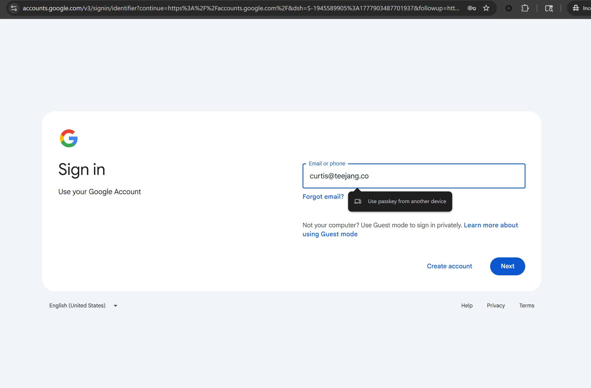

Passkeys are origin-bound by design. The cryptographic ceremony cannot be relayed across origins, and the PhishU Framework does not try to defeat that. The technique exploits a different gap. It is operational, not cryptographic, and it is sitting in over 95 percent of real-world deployments today.
FIDO2 methods have always been a thorn in attackers' sides. The familiar play for an AiTM operator is to hope the victim does not choose a phishing-resistant option like a passkey or hardware key, and to take whatever weaker factor they pick instead. The version this post explores is what happens when the operator stops hoping and actively shapes what the victim is allowed to choose from in the first place.
A note on prior research. We built this implementation without prior knowledge of related work. After we had a working version we went looking for prior art and learned that the broader DOM-level picker-stripping technique is publicly documented under the names Authentication Method Redaction Attacks and MFA Downgrade Attacks. Push Security, eSentire, Dark Reading, BleepingComputer, and others have covered it since at least 2024; a working PoC against GitHub via Evilginx has been demonstrated publicly; offensive PhaaS kits like Tycoon 2FA already ship a version of the DOM-level surface. We are not claiming discovery of that broader class, and the implementation in this post does not build on or take from any of that prior work. Our framework is independent, and the work here goes beyond DOM-level redaction in three specific ways we did not see covered in the public literature: WebAuthn API interception covering Chrome's conditional UI from inside an AiTM-proxied page, an empirical observation that Chrome's saved-password "Check your passwords" warning is brand-agnostic across known login pages, and a structural finding about how identity providers themselves help the technique on unfamiliar-device origins.
In the typical Microsoft Entra, Google Workspace, or Okta tenant, a user enrolled in a passkey is also enrolled in at least one phishable fallback factor. Push notification, authenticator-app TOTP, SMS, voice, or password-plus-recovery. Vendor admin guides explicitly recommend it for account-recovery and lost-device scenarios. Without a fallback, a lost passkey means a help-desk ticket and admin-mediated reset, which is operationally expensive at scale.
That fallback enrollment is not a misconfiguration. It is the documented best practice. And it is the entire technique.
Across Microsoft Entra, Google Workspace, and Okta, fewer than 5 percent of organizations that have enrolled passkeys also enforce phishing-resistant authentication at the policy layer. The remaining 95 percent ship the capability and rely on user choice in the picker. That choice is what we manipulate. The rest of this post is how, and what defenders should actually do about it.
An AiTM proxy is not only a wiretap. It captures session tokens, yes -- but because every response from the identity provider passes through it before reaching the victim's browser, it can also rewrite that response in real time. That ability to edit the page in flight, not just observe it, is the foundation of everything below.
Enrolled vs. Enforced: The Gap That Matters
Vendor marketing conflates "passkeys enrolled" with "phishing-resistant authentication enforced." They are not the same thing. Enrollment is a user-facing UX state. Enforcement is a server-side policy state. They are orthogonal. Most tenants have the first and not the second.
The Framework demonstrates this directly across three complementary surfaces. The first is a visible DOM-level bypass against rendered authentication-method pickers. The second is a JavaScript shim that intercepts WebAuthn API calls before any browser-native passkey UI surfaces. The third is the structural assist provided by the IdP itself, which on an unfamiliar device origin already routes victims away from passkey-first sign-in by design.
Surface 1: Visible DOM Bypass
This is the surface the public literature already covers. Authentication Method Redaction at the DOM level is a documented technique with prior PoCs against GitHub and other identity providers. Our contribution at this surface is an independent implementation as part of a defender-side simulation framework rather than as an offensive PhaaS kit, plus the integration with the rest of the Framework's reporting and capture pipeline.
When the IdP renders the authentication-method picker as clickable HTML, the proxy walks the rendered DOM and removes rows whose visible text matches passkey labels: "use your passkey," "security key," "hardware security key." The rows are hidden via combined display, visibility, and height styles. The DOM stays intact, sibling JavaScript that iterates the picker does not break, and the victim sees a picker with the phishing-resistant option silently absent. No error, no warning, no UI artifact. The IdP renders the rest of the response unchanged.


The proxy is not breaking passkey cryptography. It is editing the menu the victim is allowed to choose from in the live flow. The victim picks the next option in the visibly-shortened picker -- push, TOTP, SMS, or password-plus-recovery -- and the Framework captures it through the standard AiTM session pipeline. From the victim's perspective, the sign-in completes normally on what looks like the real identity provider page, because everything except the missing passkey row is the real identity provider page. We simply don't give the victim the option to ever sign in using a phishing-resistant option.
Surface 2: WebAuthn API Shim
This is where the framework goes beyond what the public literature on Authentication Method Redaction covers. The DOM-stripping technique fails on flows that never render a clickable picker. When the IdP does not render a picker but instead invokes the browser's WebAuthn API directly, there is no DOM element to hide. This happens in two important scenarios. The first is passkey-first or passwordless sign-in, where the IdP launches the platform authenticator without offering a method picker at all. The second is conditional UI, the autofill-style passkey hint that surfaces in the email field on the legitimate Google sign-in page as "Use passkey from another device." Both are driven by JavaScript calls to navigator.credentials.get with a publicKey argument and originate inside the browser, not inside the rendered HTML. WebAuthn API hijacking has been described before as a malicious-browser-extension technique, but we did not find prior public coverage of intercepting these calls from inside an AiTM-proxied page via response-injected JavaScript.
The proxy installs a JavaScript shim at script-load time that intercepts both navigator.credentials.get and navigator.credentials.create. When called with a publicKey argument, the shim returns an immediate rejection with the standard NotAllowedError. Non-WebAuthn credential types pass through unchanged, so password autofill, federated sign-in, and one-time-password credentials continue to work normally. The browser receives the rejection before any platform UI surfaces. The conditional-UI hint never appears in the autofill dropdown. The native passkey prompt never opens. The single-page application's existing error-fallback branch fires, the page transitions to "use another method" or shows the password field, and the victim signs in the way they always have.
The demo is reliable because conditional UI fires on every page load on the legitimate Google sign-in page, even in incognito, even with no Google account signed into the browser. Side-by-side, the legitimate origin shows the "Use passkey from another device" hint. The proxy origin does not. The shim absorbs the call before the browser surfaces anything.

navigator.credentials.get call before the browser surfaces this dropdown, and the email field is rendered without the option entirely.Surface 3: The Structural Assist
Even before the shim runs, the IdP itself is helping the technique. Google's "passkeys instead of passwords" feature checks server-side signals before deciding whether to route a user to passkey-first sign-in. Specifically: prior session cookies on the legitimate origin, prior device-state hints, and platform conditional-UI availability. None of these signals exist on a proxy origin. A proxy is, by definition, an unfamiliar device.
The result, observed empirically: a user who has fully enrolled "passkeys instead of passwords" in their Google account sees a password prompt when their session arrives at the proxy. Google's own backend chooses not to offer passkey-first to what looks like an unfamiliar device. The proxy is a textbook unfamiliar device. Real victims also arrive on unfamiliar devices when phished, so the same heuristic works in the attacker's favor every time.
The proxy origin is not breaking passkey-first sign-in. The IdP is choosing not to offer it on what looks like a fresh device. The Framework's role is to clean up whatever passkey surface the IdP does still expose, which the first two surfaces handle.
Where the 95% Number Comes From
Pull together the three surfaces and the structural assist, and the technique succeeds against any deployment that has enrolled passkeys for users, has not also configured server-side enforcement that rejects phishable fallback factors, and has the fallback enrollment that vendor best-practice documentation specifically recommends.
Across Microsoft Entra, Google Workspace, and Okta, the population that has enabled the strict-enforcement option is a small minority. Microsoft has not published exact Conditional Access Authentication Strength adoption numbers, but vendor commentary and field assessments consistently put it under 5 percent. Google Advanced Protection Program enrollment, which is opt-in by user, sits in low single digits even within Workspace tenants. Okta hardware-only Authenticator Policies are typically reserved for privileged subsets, not full-tenant rollouts.
The remaining 95 plus percent ship the capability and rely on user choice. Against that population, the Framework's three surfaces work as designed. Passkey enrollment without enforcement provides essentially zero defense against this class of AiTM attack.
The Honest Limits
Research credibility depends on naming where the technique fails. The boundaries should be visible to defenders so they know what to invest in.
The technique does not work against passkey-only enrolled users. If the account has no fallback factor registered, the IdP has nothing to fall back to and the strip leaves the user with an empty picker. The Framework records this as a passkey-only outcome and surfaces it in the customer report as a positive defensive datapoint.
The technique does not work against server-enforced phishing-resistant authentication. Microsoft Entra Conditional Access Authentication Strength configured as Phishing-resistant MFA, Google Advanced Protection Program enrollment, Okta Authenticator Policy set to Possession plus Hardware-protected, and US Federal M-22-09 mandates all reject the chosen weaker factor at policy enforcement time. The Framework records this as a downgrade-rejected-by-policy event and again treats it as a positive customer outcome. The org's posture genuinely held.
This is rarely the case, though. These outcomes are the 5 percent.
The Defensive Playbook: Tiered Enforcement
Most security leaders we work with do not have the operational capacity for full-tenant strict enforcement. Hardware key procurement, help-desk uplift, app compatibility migration, and break-glass procedures together represent a multi-quarter program, not a configuration change. The pragmatic answer is tiered enforcement.
Tier 1 covers privileged users: admins, IT, finance, executives, and source-code committers. Strict enforcement, hardware-backed authenticators only, no fallback to phishable factors. In Microsoft Entra, this is a Conditional Access policy with Authentication Strength set to Phishing-resistant MFA and restricted to hardware-backed authenticators. In Google Workspace, it is Advanced Protection Program enrollment for the named users. In Okta, it is an Authenticator Policy of Possession plus Hardware-protected combined with a Sign-on Policy that requires it for sensitive applications. The population is typically 5 to 15 percent of the org, which keeps the operational support cost bounded.
Tier 2 covers knowledge workers and sensitive-data handlers. Phishing-resistant Authentication Strength accepting synced passkeys. The security floor is slightly weaker than tier 1 because the credential lives in a software vault rather than a hardware element, but synced passkeys remain origin-bound and still defeat AiTM cryptographically. The operational cost is dramatically lower.
Tier 3 covers everyone else. Passkey enrollment encouraged, weaker enforcement acceptable. The org accepts the residual AiTM risk for this tier in exchange for not paying tier-1 costs across the entire user population. This is a deliberate risk-acceptance decision, not an oversight.
The Framework is the measurement instrument that validates the tiering. A simulated AiTM campaign against tier 1 should bounce off uniformly, recorded as downgrade-rejected-by-policy across the tier. The same campaign against tier 2 should partially succeed, demonstrating the residual risk the org accepted in exchange for lower operational cost. Tier 3 results show how exposed the bottom tier really is. That per-tier posture report is the deliverable defenders pay for, not aggregate click-through rates.
The Vendor Ask
The durable structural fix is to move the auth-method picker out of the page DOM entirely and into browser-native UI, the way WebAuthn ceremonies already work. WebAuthn is unphishable cross-origin precisely because the page has no DOM access to the browser's native prompt. The same property would make the auth-method picker unphishable: a proxy cannot strip rows it never had access to in the first place. This requires browser API work and web-platform standards collaboration, but it is the only mitigation that fails closed against the technique class in this post.
Payload signing alone is a partial mitigation. It would defeat in-flight body rewriting on the network, but it does not prevent JavaScript running in the same origin from modifying the DOM after the SPA has validated and rendered. We would route around payload signing with additional injection. The structural property a proxy cannot route around is the page not having DOM access to the picker UI to begin with.
The intermediate ask, easier for the vendors to ship today: surface a prominent admin warning when a tenant has enrolled passkeys without configuring Phishing-resistant Authentication Strength. The IdP knows the gap exists. Most admins do not, until they are attacked.
The Defensive Takeaway
Passkeys are necessary but not sufficient. The phishing-resistant guarantee comes from server-side enforcement, not from the user having a passkey enrolled. Without enforcement, an AiTM proxy treats passkey enrollment as if it were not there, because the user always has a phishable backup factor enrolled, and the proxy routes them to it.
The fix is in your IdP admin console right now. Conditional Access Authentication Strength in Microsoft Entra. Advanced Protection Program in Google Workspace. Authenticator Policy plus Sign-on Policy in Okta. Two clicks of policy plus the operational program to support it. Enrolling passkeys is the prerequisite. Enforcing them is the defense. Run a simulation that tests the enforcement, not just the enrollment, and you will know which of your users are actually protected.